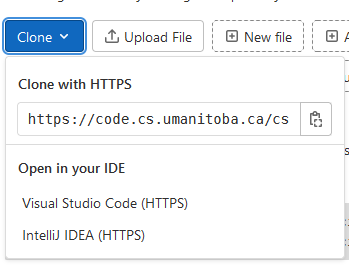

Version control is something that’s been around for a long time and
different people have different opinions about how to do version control
and which software should be used for version control. We’re going to
focus on a specific version control tool: git.
Version control software helps you keep track of the changes that
you’ve made to your own code or any kind of file over time. Version
control isn’t entirely automatic, you have to tell the software which
files to track and when it should track changes.
Initializing a repository
git keeps track of things in something called a
“repository”. In terms of the things we know about so far in this
course, a “repository” is really just a directory that has some special
(hidden) files in it. Repositories can be local directories, but more
often than not repositories are also hosted on a remote server. When a
repository is hosted on a remote server, we’re going to refer to it as a
“remote repository”.
Let’s make our own new remote repository.
We’re going to be doing this not with GitHub, but with a free,
open-source, and self-hostable product called GitLab. The U of M CS
Department hosts an instance of GitLab (there’s a web site you can go to
that’s dedicated for students taking COMP courses at the U of M) at https://code.cs.umanitoba.ca
Open that link, then we’re going to go through a few things to create
a new repository.
Sign up for GitLab
Before we can do anything with this instance of GitLab,
you’re going to need to sign up for a new account. You can skip this
step if you’ve previously signed up for a GitLab account here.
On the log in
page, click on the “Register now” link, it’s just below the big blue
“Sign in” button.
When you sign up, you can enter whatever you want for your “First
name”, “Last name”, and “Username” (this is not audited by our tech
staff), but you must use your
@myumanitoba.ca e-mail address, no other e-mail addresses
are permitted to sign up.
The account you’re creating here is not at all connected to your
account on Aviary, you don’t (and shouldn’t) use the same password for
both of these systems.
This is a real aside: consider starting to use a password
manager to generate and securely store your passwords. I can
personally recommend KeePassXC, but
some people like 1password. Others
prefer to manage their passwords on the command line and can use tools
like pass.
Main advice: don’t use the same password for everything; don’t write
your password on your hand.
Congrats! You just signed up for a version control repository
service! üéâ
Create a new repository
Now we get to the part that we’re really interested in: actually
creating a remote repository to upload our code to.
Just after you finish creating your account, and each time you log in
to GitLab, you’re going to be at your
dashboard.
The GitLab dashboard.
Click on “Create a project”. There are several options you can choose
from to create a project, but for now you should click on “Create blank
project”.
Now you get to be creative by picking a project name. The project
name that you enter here will become part of the project’s URL (the
address or location of the repository). If you want to start putting
your course documents into this repository (like you might in an
assignment), you should pick something like a course name (e.g.,
COMP1002).
Selecting a project name.
Kind of like when you were organizing your files, creating a
repository has some amount of decision making in terms of what you’re
planning to put into a repository.
When building software we usually just make one repository for one
application, but some organizations use different strategies.
A good general strategy might be “one repository for one piece of
work”.
For the purposes of this book and course, I would recommend that you
make one repository per course (e.g., make a repository for
COMP 1002, make a separate repository for COMP 2280, make a separate
repository for COMP 4820, etc).
Other options that you might consider (for coursework or in general)
are a repository for each:
Assignment,
Code library,
Project,
Publication.
The only option you have for visibility is “Private”, and you should
leave it that way.
Project visibility level (you can only
choose Private).
Some repository hosting software (like GitHub) provide the (default)
option to have public repositories. While public repositories are
important, in circumstances where you’re planning to put your course
documents into the repository (which you should be!), you don’t want to
risk having your course documents being publicly available and
accessible. In short: avoid academic misconduct situations by keeping
your repository private.
You’ll also see some options for project configuration. You should
deselect everything for your first repository. It’s not
going to hurt to have a default README.md added to your
repository, but we’re ultimately going to change what this
README.md says.
Project configuration
options.
Finally, click the “Create project” button. If everything’s worked
out, you should see a new (and empty) project page:
A fresh, new, empty project.
You just created a new remote repository! üéâ
Now that we’ve got an empty repository, we want to start adding files
to it.
Cloning a repository
To be able to add files to our repository, we’re going to need to get
the repository into a spot where we can use it. You should do this on
Aviary, but you can do this on your local machine. If you are
doing this on your local machine, you will need to install git.
The main way that we get a remote repository onto our own machines is
to “clone” the repository. We only need one piece of information to
clone a remote repository: the address of the repository.
You can find the address of your repository in two places:
The address bar of your browser, or
By clicking on the blue “Code” button on the repository page.

The blue “Clone” button in
GitLab.
Once you know the address of the repository, you will use
git on the command line to get your repository onto Aviary;
specifically you will use the command
git clone
I (me, Franklin) created a new repository with the name
hello-world. The address bar in my browser has the
address:
https://code.cs.umanitoba.ca/fbristow/hello-world
To get this repository into my user directory on Aviary, I would run
the following:
Cloning into 'hello-world'...
Username for 'https://code.cs.umanitoba.ca':
The remote server is now asking me to enter my username and password.
You should use the username and password that you used to create your
account on GitLab.
Once you’ve entered your username and password, git will
clone your repository:
Now if you check out what’s in your directory, you should see a new
folder:
ls
comp1002 bin hello-world
üéâ, you‚Äôve just cloned
the remote repository to your local user directory. Now you should
change directory into that repository!
Adding files to a repository
Version control software generally requires that you tell it
specifically which files you want it to keep track of. That means that
Git isn’t going to keep track of files that just happen to be in the
same directory as the repository, you have to tell Git to actually keep
track of those files.
Create some new files in the repository:
Make a new plain text file with some text in it using a
command-line text editor like vim. Name the file
README.md.
Transfer a file from your computer to Aviary into this
directory.
Copy the hello folder from wherever it is to this
directory.
You can copy files from one place to another on the same computer
using the cp command. You can copy entire folders from one
place to another using the -r option for recursive (just
like scp!).
To copy the hello folder here, you can use
cp from this directory:
cp-r ../hello . # if hello is in the parent directory
Even though we put these files into this directory with the
repository, Git still doesn’t know anything about them. We have to add
these files to the repository in two steps:
“Staging” the changes by adding them with the add
subcommand, and
Committing the changes using the commit
subcommand.
“Staging” changes
Adding files to the repository is straightforward: you use
git add and then tell Git which files should be added to
the repository.
Files that you add with git add are “staged” — Git knows
that the files exist and that you want it to track changes to these
files, but Git isn’t actually ready to track the changes.
You can add files and changes to the repository one at a time using
git add and including the name of the file that you want to
add:
git add README.md
You can also add entire folders to the repository:
git add hello
You can also add everything in the current working directory
to the repository:
git add .
Git doesn’t tell you anything when you add files or changes to be
staged, but you can ask Git to tell you about the current state it’s in
by using the status subcommand.
You can find out which files or changes are staged to be committed
using git status:
git status
On branch main
No commits yet
Changes to be committed:
(use "git rm --cached <file>..." to unstage)
new file: README.md
Git helpfully tells you how to unstage a file if you
accidentally added a file or change you didn’t want to add to the
repository.
Committing changes to the
repository
Even though Git knows about the files or changes that you’ve staged,
you haven’t told git that you really want it to track changes
to those files.
A “commit” is what Git really manages: what a specific set of files
looked like at a specific point in time.
When you make a commit to a repository, you’re telling your version
control software that the changes that you’ve made to these files are
important and it should keep track of that. Some important times where
you would want to keep track of things:
The first time you create a repository and you’re adding some files
to it.
When the thing you’re working on works.
When you’ve finished working on a small part of a bigger
project.
When you make a commit to a repository, you have to include a “commit
message”: a brief, human-readable message describing what you’re
committing to the repository.
We can commit staged changes to our repository using the
commit subcommand.
Unfortunately, we’ve got to do some one-time set up before we can
make our first commit. It’s OK If you skip this step (you can fix it
later), but things will flow more smoothly if you do it now.
Before we can make a commit, we need to tell git who we
are. We can configure git and tell it who we are with the
git config command:
git config --global user.name "Your name"git config --global user.email you@myumanitoba.ca # you should use your own# e-mail address here.
You only need to do this once per physical computer that you’re using
git on. In other words: if you’re using two computers,
you’ll need to run this set up step on each computer, but you only need
to do it once.
We can commit staged changes to a repository using
git commit and either writing a commit message in the
command itself, or writing a longer commit message in your text
editor.
# commit with a message inlinegit commit -m"Initial commit"
Your commit is going to look different from mine because you added
more files than me to your commit and you used a different commit
message.
You can write a longer commit message by leaving out the
-m part, and this will ask Git to open up your text editor
where you can write a longer message.
git commit # opens your text editor to write a message
After you commit your changes to the repository, everything still
looks pretty normal. Your files are all still there. Great üéâ!
You can ask Git to tell you what its status is again with
git status, but this time it’s just going to say that there
is nothing to commit
git status
On branch main
nothing to commit, working tree clean
Git commit messages are important metadata (data about your data)
that help you (or others) better understand the changes that you’ve made
to your files over time. They’re a lot like writing comments in code in
the sense that they shouldn’t describe the files that you changed or
even describe how you changed the files, but should describe why you
changed the files and what the ultimate side-effect is (“I fixed this
bug!”).
Lots of people have opinions on Git commit messages:
Adding changes and committing them to your repository is something
that you should be doing not just when you initialize the repository,
but frequently as you’re doing your work. You should add any changes to
your repository each time you accomplish something (a new method is
working, a bug has been fixed, a feature is complete).
Reverting changes
Initializing our repository and adding and committing files and
changes to our repository is great, but just adding stuff to the
repository isn’t exactly useful.
One important use for version control is being able to go back in
time to changes that were previously committed to the repository.
Let’s make some changes to our file. We don’t actually care what the
changes are because we’re making these changes to be able to see how to
undo changes.
We can revert uncommitted changes to a file using the
restore subcommand in Git.
Mess up your README.md. Go ahead. Have fun!
Here are some things you can do:
Open it in your text editor and start typing.
“Accidentally” copy a file and replace README.md
with that file
cp hello/compiled/hello.c README.md
Remove your README.md
rm-f README.md # LIVE DANGEROUSLY
Once you’ve made changes to your file, you can ask Git to tell you
about the status of the file (with git status). Depending
on what you did, Git will tell you different things, but it will
importantly notice that something has changed. Git will also
helpfully give you a hint about how to get your files back to the state
they were in before.
Now revert the changes you made to your README.md with
the restore subcommand
git restore README.md
Now open up your README.md again, and it’s back to the
way it was before you made the changes!
Files that
shouldn’t be version controlled
Being able to keep track of changes to our important files is great,
but there are some files that will have changes that don’t care
about.
Some examples of files that will change as you change your own
files:
The .class files that get generated when you compile
Java programs.
The .docx and .pdf files that you generate
when converting from Markdown to those formats.
Output files that get generated when you run certain programs.
The common identifying property of all of these files is that they
are files that get generated or created by something
else from the file that you want to keep track of (.class
files are generated from the .java files you care about;
.docx in this case is generated from the .md
files that you care about).
We don’t usually want to include these files in a version control
repository for a couple of reasons:
We can really quickly re-generate them from the files that we’re
working from (it’s pretty easy to run pandoc again!).
Sometimes these files can be really big in terms of
file size.
They are extra changes in our version control history that we
don’t care about.
We can tell Git to ignore certain files when they change by created a
special file named .gitignore in
our repository.
Use your text editor to create a new file named
.gitignore in the same folder as your repository.
Each line in a .gitignore file is either a comment
(lines beginning with #) or describes specific filenames or
“patterns” of filenames to be ignored.
Here’s an example of what a .gitignore file might look
like:
# Ignore README.docx (a specific filename)README.docx# Ignore all .class files (a "pattern", any file that ends with .class)*.class# Ignore the entire build directorybuild/
The .gitignore file is a file you want Git to
keep track of, so you need to add this file to your repository (use
git add).
Just like the .git folder, the .gitignore
file is “hidden”, it doesn’t show up when you try to look at the
contents of a directory using commands like ls. This is
true in general: any file that begins with a period (.) is
considered to be “hidden” on Linux and macOS, but you can see those
files by telling a command like ls to list everything
(ls -a).
Pushing to the remote
repository
Now that you’ve made your repository and added files to it, we want
to push all the commits that you’ve made (and thus all the files) to the
remote repository. Pushing to the remote repository is something that
you should do often, our goal is to make sure that the local repository
you have is approximately synchronized with the remote repository on the
server.
You can push all commits to the remote repository using the
git push subcommand:
You really just need to run:
git push
after you’ve made some commits.
Just like when you initially cloned the repository, git
is going to ask you to enter a username and password. The username and
password that you enter here are the ones that you chose when you signed
up for your GitLab account at https://code.cs.umanitoba.ca.
You might see output similar to the following:
git push
Username for 'https://code.cs.umanitoba.ca': you@myumanitoba.ca
Password for 'https://you@mumanitoba.ca@code.cs.umanitoba.ca':
Enumerating objects: 3, done.
Counting objects: 100% (3/3), done.
Writing objects: 100% (3/3), 225 bytes | 225.00 KiB/s, done.
Total 3 (delta 0), reused 0 (delta 0), pack-reused 0
To https://code.cs.umanitoba.ca/you/comp-1002.git
* [new branch] main -> main
Branch 'main' set up to track remote branch 'main' from 'origin'.
Now refresh your browser window that has the remote repository, and
you should see some files! üéâ
Further reading
This document gets you started with version control and Git, but
you’re definitely going to run into situations where you want to do
things that are more complex than what we’ve seen here, or you’re going
to make a mistake and need to fix it.
You can find lots of good information online about Git and version
control, but here are some resources that are particularly good or
helpful:
Roger Dudler’s git - the simple
guide does a great job of quickly summarizing the tasks you might
need to do when doing version control with Git.
Seth Robertson’s On undoing,
fixing, or removing commits in git is a “choose your own
adventure”-style guide on … well, undoing, fixing, or removing commits
in Git! Maybe you accidentally committed a file that you don’t want to
be in your repository, or maybe you accidentally forgot to include a
file in a commit that should have been included in that commit.
This will guide you through getting into the state that you want to be
in.
If you’re OK with some profane language in English, Katie
Sylor-Miller’s Oh Sh*t, git!?! is
also an excellent source of solutions to “Please help me!” moments that
you will definitely encounter when you’re using
git.
Yeah. I know you can swear on the internet. But I have children. One
of my children can read and the other is learning to read, and
they will both eventually be able to figure out what sh*t means (and I’m
OK with that), I still feel some parental sense of responsibility to
keep it clean.